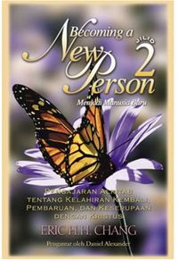

Welcome to ElioraNestSelamat Datang di ElioraNestبه ElioraNest خوش آمدید欢迎来到 ElioraNest
A quiet place to reflect on God's Word and learn to live by faith. Here you will find devotionals, studies on the name and character of God, and notes from a journey of faith.
Tempat yang tenang untuk merenungkan Firman Allah dan belajar hidup oleh iman. Di sini Anda akan menemukan renungan, kajian tentang nama dan karakter Allah, serta catatan perjalanan iman.
جایی آرام برای تأمل در کلام خدا و آموختن زندگی با ایمان. در اینجا تأملهای روحانی، مطالعه دربارهٔ نام و سرشت خدا، و یادداشتهایی از یک سفر ایمان را خواهید یافت.
一处安静的地方，默想神的话语，学习凭信心生活。在这里你会找到灵修文章、关于神的名与品格的研习，以及信仰旅程中的笔记。
Verse of the dayAyat hari iniآیهٔ امروز今日经文
“No one who abides in him keeps on sinning.”
1 John 3:6 (ESV)“Setiap orang yang tinggal dalam Dia tidak terus menerus berbuat dosa.”
1 Yohanes 3:6 (AYT)«هر که در او میماند، پیوسته گناه نمیکند.»
اول یوحنا ۳:۶“凡住在他里面的人，不会继续犯罪。”
约翰一书 3:6Hebrew word of the dayKata Ibrani hari iniواژهٔ عبری امروز今日希伯来文单词
חָכְמָה
Chokhmah
Wisdom. It describes the ability to understand, discern, and act rightly, not merely to possess knowledge.
Hikmat atau kebijaksanaan. Kata ini menggambarkan kemampuan untuk memahami, membedakan yang benar, dan bertindak dengan tepat, bukan sekadar memiliki pengetahuan.
حکمت. این واژه توانایی فهمیدن، تشخیص دادن و درست عمل کردن را توصیف میکند، نه فقط داشتن دانش را.
智慧。这个词描述的是理解、分辨并正确行事的能力，而不仅仅是拥有知识。
“The fear of the LORD is the beginning of wisdom, and the knowledge of the Holy One is insight.”Proverbs 9:10 (ESV)
“Permulaan hikmat adalah takut akan TUHAN, dan mengenal Yang Mahakudus adalah pengertian.”Amsal 9:10 (TB)
«ترس خداوند آغاز حکمت است، و شناخت آن قدوس، فهم است.»امثال ۹:۱۰
“敬畏耶和华是智慧的开端，认识至圣者便是聪明。”箴言 9:10
Devotional seriesSeri renunganمجموعههای تأمل灵修系列
Daily · WBSHarian · WBSروزانه每日
Signs of the New BirthTanda Kelahiran Kembaliنشانههای زاده شدن از نو重生的记号
Have we truly been born again? A daily series that tests our life against Scripture.Sudahkah kita sungguh dilahirkan kembali? Seri harian yang menguji hidup kita dengan Firman.آیا ما واقعاً از نو زاده شدهایم؟ مجموعهای روزانه که زندگی ما را با کلام میسنجد.我们真的重生了吗？一个以圣经检验生命的每日系列。
Read the series →Baca serinya →← خواندن مجموعه阅读系列 →SeriesBerseriمجموعه系列
Rebirth and RenewalKelahiran Kembali dan Pembaruanزاده شدن از نو و تجدید重生与更新
New birth is the beginning; renewal is the daily walk that follows.Kelahiran kembali adalah awal; pembaruan adalah perjalanan harian sesudahnya.تولد تازه آغاز است؛ تجدید، راه روزانهای است که پس از آن میآید.重生是开始；更新是随后每日的行走。
Read the series →Baca serinya →← خواندن مجموعه阅读系列 →YouthPemudaجوانان青年
Putting On the New SelfMengenakan Manusia Baruپوشیدن انسان نو穿上新人
A daily devotional series for young people learning to live the new life.Seri renungan harian bagi anak muda yang belajar menjalani hidup baru.مجموعهٔ تأمل روزانه برای جوانانی که زندگی نو را میآموزند.为学习活出新生命的年轻人预备的每日灵修系列。
Read the series →Baca serinya →← خواندن مجموعه阅读系列 →Study Notes · 9 chaptersCatatan Belajar · 9 babیادداشت مطالعه · ۹ فصل研经笔记 · 9章
Romans 9:1–29Roma 9:1–29رومیان ۹: ۱–۲۹罗马书 9:1–29
Not all Israel is Israel: a chapter-by-chapter study of Paul's argument.Bukan semua Israel adalah Israel: kajian per bab atas argumen Paulus.همهٔ اسرائیل، اسرائیل نیستند: مطالعهٔ فصل به فصل استدلال پولس.从以色列生的，不都是以色列人：逐章研读保罗的论述。
Start studying →Mulai belajar →← شروع مطالعه开始研读 →Weekend articleArtikel akhir pekanمقالهٔ آخر هفته周末文章
What Causes Sin in the Process of RenewalPenyebab Dosa dalam Proses Pembaruanعلت گناه در روند تجدید更新过程中犯罪的原因
Why do we still fall, even when we know what is right? This writing looks at four things that can hold back our renewal: the pull of the world, the inability to tell good from evil, old habits of thinking, and a lack of knowledge. Renewal begins with honestly looking at ourselves.
Mengapa kita masih jatuh, padahal kita tahu apa yang benar? Tulisan ini membahas empat hal yang dapat menghambat pembaruan kita: daya tarik dunia, ketidakmampuan membedakan yang baik dan yang jahat, kebiasaan berpikir yang lama, serta kurangnya pengetahuan. Pembaruan dimulai dari kejujuran melihat diri sendiri.
چرا با آنکه میدانیم چه درست است، باز هم میلغزیم؟ این نوشته چهار چیز را بررسی میکند که میتواند جلوی تجدید ما را بگیرد: کشش دنیا، ناتوانی در تشخیص نیک از بد، عادتهای کهنهٔ فکری، و کمبود شناخت. تجدید با نگاهی صادقانه به خودمان آغاز میشود.
为什么我们明知何为正确，却仍会跌倒？本文探讨可能阻碍我们更新的四件事：世界的吸引、无法分辨善恶、旧有的思维习惯，以及知识的缺乏。更新始于诚实地审视自己。
Book StoreToko Bukuکتابفروشی书店

Becoming a New Person (Menjadi Manusia Baru)
Biblical teaching on new birth, renewal, and being conformed to Christ. Our latest weekend devotionals (Chapters 8 and 9) draw from this book. Read the devotional on Chapter 8, then find the book in the Cahaya Pengharapan bookstore.
Pengajaran Alkitab tentang kelahiran kembali, pembaruan, dan keserupaan dengan Kristus. Renungan akhir pekan terbaru kami (Bab 8 dan Bab 9) bersumber dari buku ini. Baca renungan Bab 8, lalu temukan bukunya di toko buku Cahaya Pengharapan.
آموزهٔ کتابمقدسی دربارهٔ تولد تازه، تازهشدن و همشکل شدن با مسیح. تأملهای آخر هفتهٔ اخیر ما (فصلهای ۸ و ۹) از این کتاب گرفته شده است. تأمل فصل ۸ را بخوانید و سپس این کتاب را در کتابفروشی Cahaya Pengharapan بیابید.
关于重生、更新，以及被改变成基督形象的圣经教导。我们最新的周末灵修（第8章和第9章）取材自本书。请阅读第8章灵修，然后到 Cahaya Pengharapan 书店寻找这本书。
Young Faith Journey
A separate blog for young people: devotionals, Sunday school, studies, and daily challenges. Come and walk the journey together.
Blog tersendiri untuk anak muda: renungan, sekolah minggu, kajian, dan tantangan harian. Mari berjalan bersama.
وبلاگی جداگانه برای جوانان: تأملها، مکتب یکشنبه، مطالعهها و چالشهای روزانه. بیایید این سفر را با هم برویم.
一个专为年轻人设立的博客：灵修、主日学、研习与每日挑战。一起来同行这段旅程。
Featured songsLagu pilihanسرودهای برگزیده精选诗歌
Listen while you read or reflect.Dengarkan sambil membaca atau merenung.هنگام خواندن یا تأمل گوش کنید.在阅读或默想时聆听。